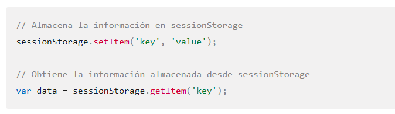

SessionStorage
¿Qué es el SessionStorage?
La propiedad sessionStorage permite acceder a un objeto Storage asociado a la sesión actual. La propiedad sessionStorage es similar a localStorage (en-US), la única diferencia es que la información almacenada en localStorage no posee tiempo de expiración, por el contrario la información almacenada en sessionStorage es eliminada al finalizar la sesion de la página. La sesión de la página perdura mientras el navegador se encuentra abierto, y se mantiene por sobre las recargas y reaperturas de la página. Abrir una página en una nueva pestaña o ventana iniciará una nueva sesión, lo que difiere en la forma en que trabajan las cookies de sesión.
Las características de SessionStorage son:
-
Está también basado en el formato clave-valor.
-
La información persiste hasta que la pestaña o ventana es cerrada, incluso con una recarga de la página
-
Almacena entre 5 y 10MB de datos, dependiendo del navegador que se utilice.
-
Sólo los scripts del mismo origen pueden acceder a los datos.
-
Está limitado al uso dentro de la misma pestaña, no se puede compartir información entre ventanas o pestañas.
-
Es de uso exclusivo del lado cliente.
-
El formato de la información que se almacena es de tipo texto.
La forma más adecuada de trabajar con el Session Storage sería:
-
Para almacenar un elemento: sessionStorage.setItem(“key”, “value”)
-
Para obtener un elemento: sessionStorage.getItem(“key”)
-
Para eliminar un elemento: sessionStorage.removeItem(“key”)
-
Para limpiar toda la información: sessionStorage.clear()
Sintaxis del SessionStorage

Guardar Datos con SessionStorage

Recuperar Datos con SessionStorage

Borrar Datos con SessionStorage

Limpiar Datos con SessionStorage